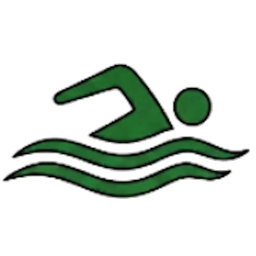
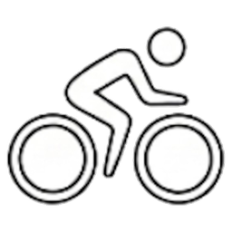
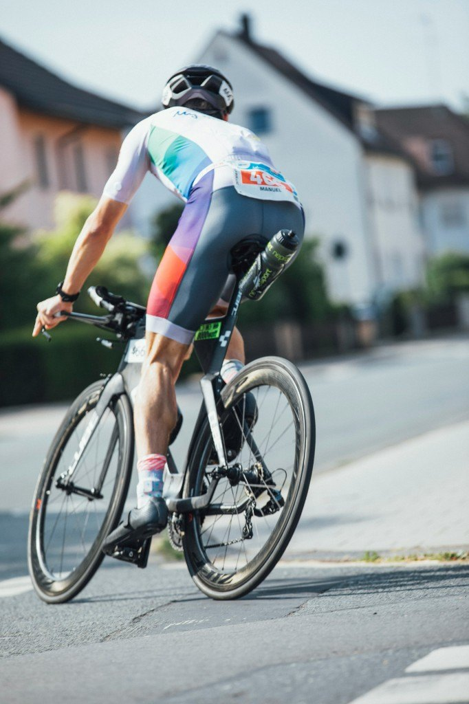
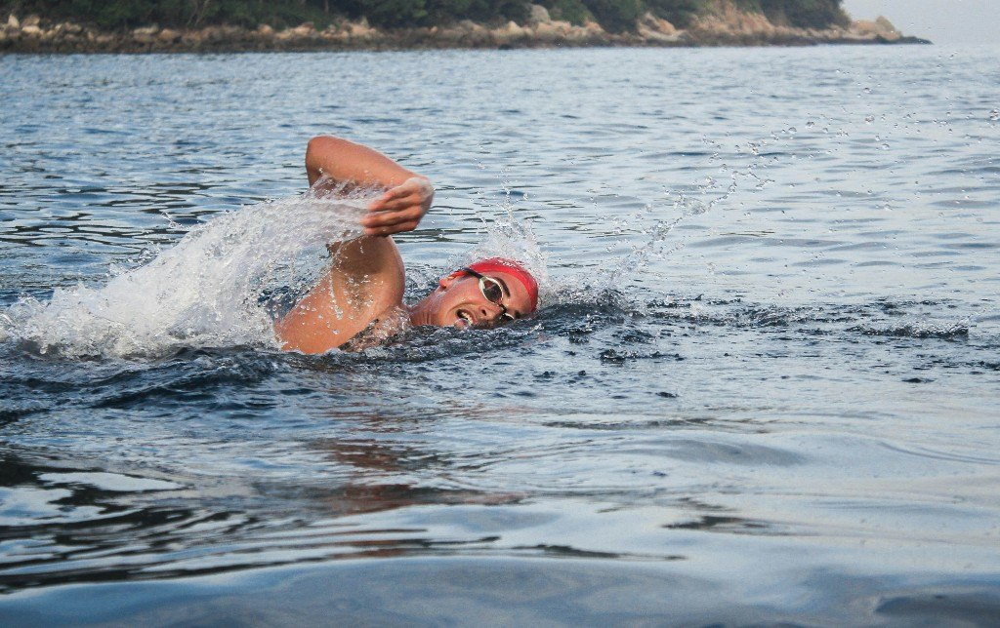
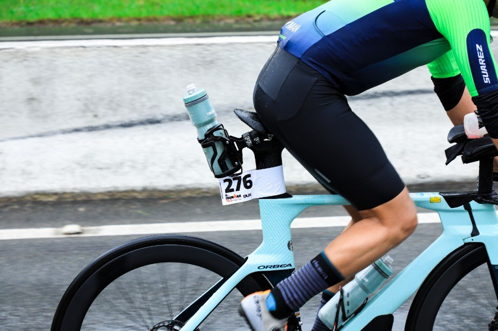
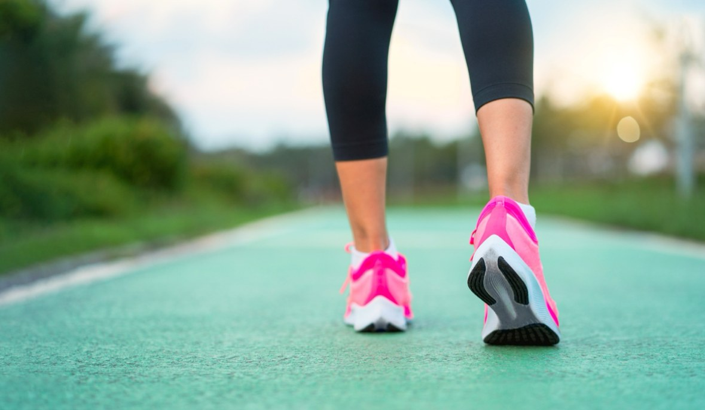
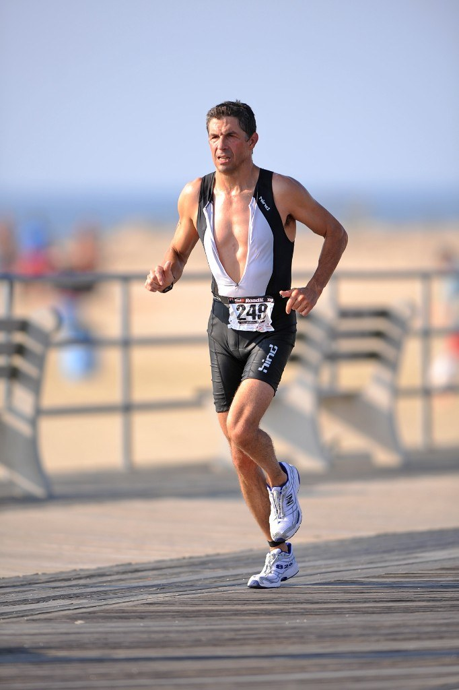

- Custom weekly training plan with heart rate, power, and run / swim paces (based on testing), delivered via TrainingPeaks
- Unlimited contact via text, email, or TrainingPeaks comments
- Two phone calls per month, based on your availability
- “A” race plans with detailed power and / or heart rate, plus race tactics and strategies
- Periodic swim, bike, and run testing to track and monitor progress
- Sweat testing to determine your optimal hydration, nutrition, and sodium guidelines
- Structured strength training
Welcome to Donnelly Multisport
Train With Purpose.
Race With Confidence.
It begins with commitment.
Success in endurance sports starts with a commitment—to train, to improve, and to stay consistent. Once that commitment is made, the right training approach can help you optimize your performance, achieve your goals, and enjoy the journey along the way.
-

Swim -

Bike - Run
Coaching built around you
Stronger. Smarter. More confident.
At Donnelly Multisport, coaching is built around you. The goal is a personalized training experience that helps you become a stronger, smarter, and more confident athlete—while maintaining balance with the relationships and responsibilities that matter most in your life.

Coaching
Personalized coaching for your goals
Donnelly Multisport provides coaching for age group athletes of all levels, from first-timers to experienced competitors pursuing their next personal best. Whether you are preparing for your first triathlon, targeting a personal best, or training for a major endurance event, your program is designed around your goals, experience, fitness, and available time.



About Michael
Athlete. Professional. Coach.
As both a competitive athlete and working professional, Michael understands the importance of communication and goal-driven training. Successful coaching isn’t just about creating workouts. It’s about understanding the athlete, adapting to real life, communicating effectively, and developing the consistency needed to improve over time.

Coaching Achievements
- Ironman and Ironman 70.3 World Championships
- USAT Age Group World Championships
- USAT Age Group All-Americans and Honorable Mentions
- Prior Head Coach for five triathlon clubs
Personal Athletic Achievements
- Ironman finisher
- Boston Marathon qualifier and finisher
- Multiple USAT Age Group All-American
- 2x USAT Age Group World Championship qualifier
- 2x Hawaii RoughWater Swim finisher
- Escarpment Trail Run finisher
- Many first-place age group wins at major races throughout the USA
Certifications & Education
- USAT Level II Long Course Coach
- ESCI Level 1 Coach
- American College of Sports Medicine (ACSM) Certified Personal Trainer
- Total Immersion Swim Coach
- Master of Science in Information Systems and Project Management
- Bachelor of Science in Business Administration
This combination of endurance-sport experience, coaching education, and professional experience provides a unique perspective on training, planning, communication, and performance.
Training Principles
Train intelligently. Stay healthy. Get faster.
Over decades of endurance training, I’ve learned that getting faster isn’t about working harder. It’s about training intelligently, consistently, and staying healthy.
-
Listen to Your Body
Do not ignore aches and pains. Address problems before they become significant injuries. If discomfort continues after your warm-up, stop the workout, cool down, and give your body time to rest. Taking a few days off is far better than being forced to take weeks or months off from training.
-
Always Warm Up and Cool Down
Give yourself 10–15 minutes at the beginning of each workout to prepare your body and get mentally ready to train. Afterward, take another 10–15 minutes to cool down and reflect on what went well and where improvement is needed. If you’re short on time, reduce the main set—but keep your warm-up and cool-down.
-
Recovery Is Training
Your body needs rest to adapt to training. Don’t attempt a workout when you’re excessively fatigued, hungry, or dehydrated. Sometimes the smartest training decision is to skip a workout and recover.
-
Take Care of Your Running Shoes
Replace your running shoes every 400–500 miles and use them only for running workouts. The best running shoe is the one that fits your feet best.
-
Respect the Recovery Between Intervals
The recovery period can be just as important as the interval itself. If your interval times begin to deteriorate significantly or your form starts breaking down, stop the workout. You should finish your interval session feeling as though you could have completed one more interval.
-
Vary Your Running Direction
Alternate clockwise and counterclockwise when running on a track. Running continuously in the same direction can contribute to muscular imbalances. The same principle applies to consistently running on the same side of a road, particularly because many roads slope away from the center line.
-
Follow the 10% Rule
Avoid increasing your training volume by more than 10% per week.
-
Build Strength and Mobility
Include core training and yoga in your overall routine. These activities can help build strength and address muscular imbalances associated with endurance training.
-
Know Yourself
Every athlete is different. Learn what works for you—and stick with it.
-
Consistency Creates Speed
To get fast, you need to train consistently. To train consistently, you need to stay healthy.
Ready to begin?
Ready to make the commitment?
Whether you’re preparing for your first race or pursuing your next personal best, Donnelly Multisport can help you develop a focused, personalized approach to training.
Email Michael at donnellymultisport@gmail.com
Contact Michael